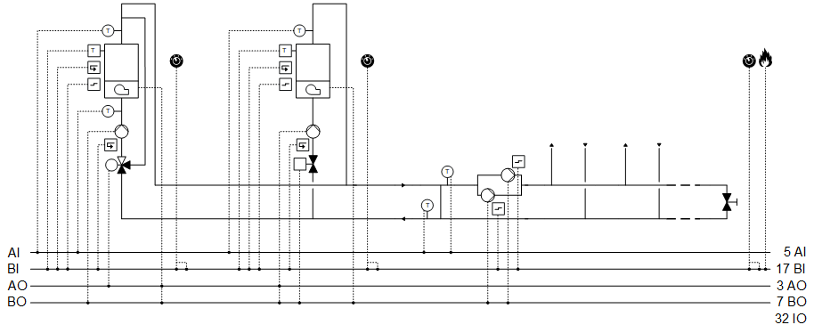
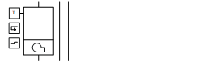
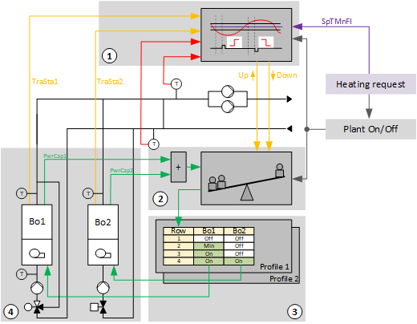
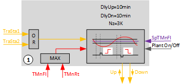
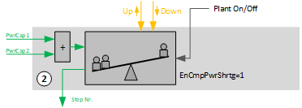
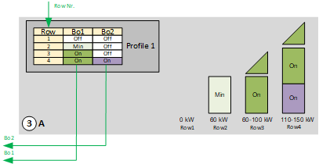
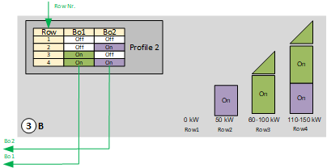
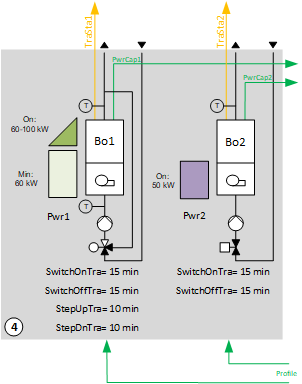
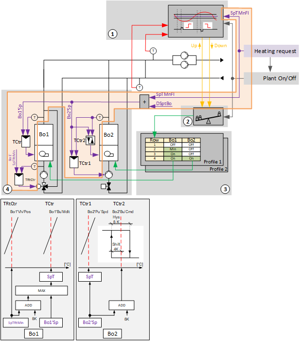

[HGen21] 热量产生、串级控制、2 个锅炉（燃烧器调节和 1 级）
工厂示例 HGen21 有两个锅炉、一个调节燃烧器和一个单级燃烧器。
Functions
- Collects heat demand and controls to the corresponding setpoint
- Boiler sequence control
- Logic for power control based on a comparison of the setpoint versus actual value on the main flow and delay times
Plant diagram

Components
- One boiler with modulating burner, 1-stage pump, and maintain boiler return with 3-port valve
- One boiler with 1-stage burner, modulating pump, and shutoff valve
- Bypass between main flow and main return (hydraulic separator)
- Main pump group, consumer side
Components and functions
设备示例的组件和功能：
成分 | 功能 | BACnet object |
|---|---|---|
| Fire detection contact 此__VAR_000__中，风道面积仅供用户参考；它不用于阻尼器位置计算。没有系数对象或系数计算逻辑。 | [BI]Fire detection contact |
| Operating mode switch 将工厂切换至：Auto | Off | On | [MI]Operating mode switch |
| Manual operating mode selection 将工厂切换至：Auto | Off | On | [MCnfVal]Manual operating mode selection |
| Present operating mode 报告当前操作模式：Off | On | [MCalcVal]Present operating mode |
| Reason for present operating mode 报告当前模式的原因：Exception | Operating mode switch | Manual operating mode selection|热量要求 | [MCalcVal]Reason for present operating mode |
| Heat request 获取并评估热量需求。 | [BCalcVal] 热请求 (1) [ACalcVal]Setpoint for heating request (1) [ACnfVal]Offset for setpoint heating request [ACnfVal]Minimum setpoint heating request |
| Main pump group, consumer side 根据需求每次打开/off 一台泵。 根据泵的运行时间选择泵。 |
> [BO]Command pump 1 > [BO]Command pump 2 |
报告相应泵的故障并将其关闭。如果需要并且可能的话，备用泵被打开。 如果两台泵均出现故障，设备将关闭。 | > [BI]Fault pump 1 > [BI]Fault pump 2 | |
| Hydraulic separator, temperature measurement |
|
主流温度传感器 测量用户端的主流温度。 | [AI]Main flow temperature consumer side | |
主回水温度传感器 测量发电侧主回水温度。 | [AI]Main return temperature generation side | |
| Setpoint determination 计算锅炉温度的设定值。 | [ACalcVal]Present setpoint for main flow temperature [ACnfVal]Delta setpoint for boiler temperature |
| Step up/down 根据最大值选择相应的温度传感器。 将设定值与相关实际值（最大选择）进行比较，并在延迟后要求更多或更少的功率。 |
|
| Power control and compensation 获取电力需求。 将配置文件表的功率需求平衡为更多功率（向下一行或多行）或更少功率（向上一行或多行）。 |
|
| Profile table 锅炉及其阶段的顺序运行表。表中的每一行（从上到下）提供更多电量。 通过热量请求和预定义顺序控制锅炉。 确定是否添加或关闭锅炉。 |
|


 Main pump group (
Main pump group (
Boiler 1
成分 | 功能 | BACnet object |
|---|---|---|
| Boiler 1 |
|
| Manual switch 将锅炉切换至：Auto | Off | On | [MI]Manual switch |
| Boiler temperature and setpoint |
|
确定锅炉温度。 | [ACalcVal]Present temperature setpoint | |
锅炉温度传感器 测量锅炉温度。 | [AI] 温度 | |
 | Burner, modulating |
|
Temperature controller 控制锅炉温度。 | > [控制器]Temperature controller | |
命令 根据需要打开/off 燃烧器。 | > [BO] Command | |
自然、基础 将功率控制在 0 到 100 [%] 之间。 | > [AO]Modulating | |
故障信息 报告故障。 关闭锅炉。 | > [BI] Fault | |
监控锅炉温度。 Switches off the burner. 混合阀通向通孔，并使锅炉泵保持开启状态两分钟。然后阀门切换至旁路并且泵关闭。 | > [BI]Safety temperature limiter | |
反馈，二进制 | > [BI]Feedback | |
Return temperature sensor 测量回水温度。 | [AI]Return temperature | |
Pump |
| |
命令 根据需要打开/off 泵。 | > [BO] Command | |
反馈留言 监控反馈并关闭锅炉。 | > [BI]Feedback | |
Mixing valve 混合从流到返回的所需量的水，以达到所需的返回温度。 |
| |
用于维持回水温度的温度控制器 控制最低回水温度。 | > [控制器]Temperature controller | |
定位 0% = Bypass … 100% = 直通端口 | > [AO] 位置 | |
维持回水温度的设定值。 | [ACnfVal]Setpoint minimum return temperature |


Boiler 2
成分 | 功能 | BACnet object |
|---|---|---|
| Boiler 2 |
|
Manual switch 将锅炉切换至：Auto | Off | On | [MI]Manual switch | |
Boiler temperature and setpoint |
| |
确定锅炉温度。 | [ACalcVal]Present temperature setpoint | |
锅炉温度传感器 测量锅炉温度。 | [AI] 温度 | |
Burner, 1-stage |
| |
Temperature controller 控制锅炉温度。 |
| |
命令 根据需要打开/off 燃烧器。 | > [BO] Command | |
故障信息 报告故障。 关闭锅炉。 | > [BI] Fault | |
监控锅炉温度。 关闭燃烧器并保持截止阀打开和锅炉泵打开两分钟。然后关闭截止阀并关闭泵。 | > [BI]Safety temperature limiter | |
反馈，二进制 | > [BI]Feedback | |
Pump |
| |
Temperature controller 控制锅炉温度。 | > [控制器]Temperature controller | |
命令 根据需要打开/off 泵。 | > [BO] Command | |
自然、基础 如果燃烧器无法再达到锅炉温度设定值，则减少流经锅炉的水流量。 | > [AO]Modulating | |
反馈留言 监控反馈并关闭锅炉。 | > [BI]Feedback | |
Shutoff valve 锁定/unlocks 锅炉回水。 |
| |
命令 关闭或打开锅炉回路 (2)：关闭|打开 | > [BO] Command |
Overview
下图是工厂示例 HGen21 的简化说明。
Sequencing energy generators

Key
1, 2 |
|
SpTMnFl | Setpoint for main flow temperature |
3 |
|
Bo1 | Boiler 1 |
Bo2 | Boiler 2 |
4 |
|
PwrCap1 | 可用功率1 |
PwrCap2 | 可用功率2 |
TraSta1 | Transient state 1 |
TraSta2 | Transient state 2 |
Step up/down (1)

Key
DlyUp | 上行脉冲延迟 |
DlyDn | 下行脉冲延迟 |
Nz | Neutral zone |
SpTMnFl | Setpoint for main flow temperature |
TMnFl | 水力分离器后主流温度（消耗侧） |
TMnRt | 水力分离器之前的主回路温度（发电机侧） |
TraSta1 | Transient state 1 |
TraSta2 | Transient state 2 |
重要设置：
- Neutral zone (Nz) = 3 K
- Delay for up impulse (DlyUp) = 10 min
- Delay for down impulse (DlyUp) = 10 min
如果启用该功能，则选择主流量“TMnFl”和主返回“TMnRt”中两个温度中的较高值作为受控变量。如果测量温度按设定点“SpT”离开中性区“Nz”，则通过输出“StepUp”或“StepDn”发送脉冲“Step up”或“Step down”以实现功率平衡。脉冲的发送有延迟。延迟是使用设置“DlyUp”和“DlyDn”确定的。
有两种情况：
- One or both temperatures drop. Pulse "Step up" is generated.
Heat generation supplies too little power and/or flow in the consumer circuit is higher than in the generation circuit. - One or both temperatures increase. Pulse "Step down" is generated.
Heat generation supplies too much power and/or flow in the consumer circuit is lower than in the generation circuit.
为了防止过早地继续切换，评估逻辑在每个脉冲之后保持。启用的热发生器将其“TraSta”返回到“Step up/down”。一旦过渡状态到期，评估逻辑就会重新启动。
向上或向下
Power control and compensation (2)

Key
EnCmpPweShrtg | 断电时自动功率补偿 |
PwrCap1 | 可用功率1 |
PwrCap2 | 可用功率2 |
重要设置：
- Automatic power control and compensation for a loss of power (EnCmpPwrShrtg) = 1 (see below)
功率控制和补偿接收来自“升压/down”的请求，以由于脉冲“升压”或“降压”而增加或减少功率。这样，“功率控制和补偿”就会触发配置文件表中下一行或上一行的更改。
然后，“功率控制和补偿”检查“配置表”中行的变化是否导致当前产生的输出达到预期的增加或减少。它接收当前产生的功率输入 [PwrCap] 的反馈，并将其与内部存储器 [PrPwrCap] 中的值进行比较。
如果未达到所需结果，“功率控制和补偿”会更改行，直到达到所需的当前功率增加或减少。
电源短缺时自动功率补偿 [EnCmpPwrShrtg]：根据输入 [PwrCap] 检测电源短缺，并通过顺序步骤进行平衡，例如由于故障导致热发生器损失。
功率控制与补偿
Profile table (3)
在配置表中，确定了打开热发生器的顺序。可以创建四个不同的配置文件。这些条目被输入到每个配置文件中，以便启用的热发生器或级的总功率随着行数的增加而增加。
功能块 SELP_8MS 确定配置文件表。
[SELP_8MS] Profile and table value selection for 8 multistate values
示例中准备了两个配置文件：
概况 1：“冬季概况”

锅炉 1 (100 KW) 是调节锅炉，旨在作为冬季运行的主锅炉。
在以下情况下，锅炉 2 开启：
- The power for boiler 1 is not sufficient
- Boiler 1 is in fault
简介 2：“夏季简介”

锅炉 2 (50 KW) 旨在作为夏季运行的锅炉。
如果满足以下条件，则切换至锅炉 1：
- The power for boiler 2 is not sufficient
- Boiler 2 is in fault
在本例中，规划了一个参数块用于配置文件的切换。可以为特定项目编写逻辑。
型材表
Heat generator (Boiler 1 and 2) (4)
由配置文件表启用的热发生器报告可用功率 [PwrCap] 以进行功率控制和补偿。
如果功率级发生主动变化，它们还会将瞬态 [TraSta] 报告为“Step up/down”。在活动瞬态期间不会触发进一步的“升压”或“降压”。

Key
TraSta1 | Transient state 1 |
TraSta2 | Transient state 2 |
PwrCap1 | 可用功率1 |
PwrCap2 | 可用功率2 |
Bo1 | Boiler 1 |
Bo2 | Boiler 2 |
SwiOnTra | 接通时的瞬态 |
SwiOffTra | 关断时的瞬态 |
StepUpTra | 登台时的瞬态 |
StepDnTra | 下台时的瞬态 |
Boiler 1 with modulating burner, 1-stage pump, maintain boiler return with 3-port valve
操作模式：关、开、最小。
功率反馈设置：
在功能块 SELMS_R 上完成每级功率
1 Off = 0 KW
2 On = 100 KW
3 Min. = 60 KW
嵌套图表 BoTraSta(1) 上瞬态反馈的设置：
Components, sequence, and function in CMDSEQ_B (Bo1)
工厂运行模式 | 成分 | ||
|---|---|---|---|
| Pu | Vlv | Bu |
Off | 离开 | 离开 | 离开 |
On | On | On | On |
Min | On | On | On |
| |||
Sequences |
| ||
启动顺序 | 1 | 2 | 2 |
启动功能 | 反馈 | AND （具有下一个聚合的组） | AND （具有下一个聚合的组） |
启动延迟 | - | - | - |
| |||
停止顺序 | 2 | 2 | 1 |
停止功能 | AND （具有下一个聚合的组） | AND （具有下一个聚合的组） | 延迟 |
停止延迟 | - | - | 2m |
[CMDSEQ_B] Command sequence for binary
Start sequence
- The pump switches on. It is further switched if an operating message comes from the pump on the input pin for CmdSeq(Bo1).
- Control of maintain return with the valve and the burner switches on simultaneously (function AND).
Stop sequence
- The burner switches off. It waits for 2 minutes (function Delay).
- The valve is set to bypass and the pump switches off (function AND).
Boiler 2 with 1-stage burner, modulating pump, and shutoff valve
操作模式：关、开
功率反馈设置：
在功能块 SELMS_R 上完成每级功率
1 Off = 0 KW
2 On = 50 KW
嵌套图表 BoTraSta(2) 上瞬态反馈的设置：
SwiOnTra | 接通时的瞬态 | 15 min |
SwiOffTra | 关断时的瞬态 | 15 min |
Components, sequence, and function in CMDSEQ_B (Bo2)
工厂运行模式 | 成分 | ||
|---|---|---|---|
| Vlv | Pu | Bu |
Off | 离开 | 离开 | 离开 |
On | On | On | On |
| |||
Sequences |
| ||
启动顺序 | 1 | 2 | 3 |
启动功能 | 延迟 | 反馈 | AND （具有下一个聚合的组） |
启动延迟 | 30 s | - | - |
| |||
停止顺序 | 2 | 2 | 1 |
停止功能 | AND （具有下一个聚合的组） | AND （具有下一个聚合的组） | 延迟 |
停止延迟 | - | - | 2m |
Start sequence
- The shutoff valve opens. It is further switched after 30 seconds.
- The pump switches on and its control is enabled. It is further switched if an operating message comes from the pump on the input pin for CMDSEQ_B (Bo2).
- The burner switches on.
Stop sequence
- The burner switches off. It waits for 2 minutes (function Delay).
- The shutoff damper closes and the pump switches off (function AND).
设定值生成
Main pump group, consumer side
该示例实现了两个主泵，每个主泵都有一条故障消息。
转换发生：
- Every 168 hours regardless of operating hours
- Regardless of fault
通过功能块 ROT_8 实现转换。
[ROT_8] Rotation switch with 8 outputs
Setpoint generation and temperature control
单独的热量消耗传输其热量请求并根据该热量请求形成主流的温度设定点。设定点稍微增加并发送到热发生器。

Key
1, 2 |
|
SpTMnFl | Setpoint for main flow temperature |
DSpTBo | Delta setpoint for boiler temperature |
3 |
|
Bo1 | Boiler 1 |
Bo2 | Boiler 2 |
4 |
|
Bo1'Sp | 锅炉 1 的设定值 |
Bo2'Sp | 锅炉 2 的设定值 |
TCtr | Temperature controller |
TRtCtr | Return temperature controller |
Bo1'VlVPos | 锅炉1阀位 |
博1'布'Mdlt | 锅炉1燃烧器调节控制 |
Bo2Pu'Spd | 锅炉2泵转速 |
Bo2Bu'Cmd | 锅炉2燃烧器命令 |
Hys | Hysteresis |
SpT | Temperature setpoint |
SpTRtMin | Setpoint minimum return temperature |
BACnet objects for boiler 1
姓名 | 描述 | 对象类型 | 默认值 |
|---|---|---|---|
Bo1'Vlv'TCtr | 温度控制器维持回流阀锅炉1 控制锅炉回水温度。 | 控制器 | N/A |
温度控制器充当 PI 控制器（PID，微分作用时间 Tv=0），将最小回水温度设定值 [Bo1'SpTRtMin] 与回水温度 [Bo1'TRt] 进行比较，并计算输出上的阀门位置 [Bo1'Vlv'Pos]。 预设了以下控制器变量： | |||
Bo1'Vlv'TCtr | 温度控制器 燃烧器 锅炉 1 控制锅炉温度。 | 控制器 | N/A |
温度控制器充当 PI 控制器（PID，微分动作时间 Tv=0），将温度设定值 [Bo1'PrSpT] 与锅炉温度 [Bo1'T] 进行比较，并计算输出上燃烧器 [Bo1'Bu'Mdlt] 的调节控制。 预设了以下控制器变量： | |||

回水温度的设定值不得超过，并且由锅炉制造商指定。锅炉温度的设定点源自该设定点。锅炉温度设定值被限制为从回水温度设定值加上差值（例如， 8K。
BACnet objects for boiler 2
姓名 | 描述 | 对象类型 | 默认值 |
|---|---|---|---|
Bo2'Pu'TCtr | 温控泵锅炉2 控制锅炉温度。 | 控制器 | N/A |
温度控制器充当 PI 控制器，将温度设定点 [Bo2'PrSpT] 与锅炉温度 [Bo2'T] 进行比较，并计算输出上泵 [Bo2'Pu'Mdlt] 的调节控制。 预设了以下控制器变量： | |||
工厂运行模式：
- Off (1)
- On (2)
操作模式在 [MCalcVal] 对象“当前操作模式”上报告。
同时，将当前操作模式的原因报告给另一个 [MCalcVal] 对象：
- Exception (1)
- Operating mode switch (2), resulting from an active (not equal to Auto) operating mode switch
- Operating mode (3), resulting from an active (not equal to Auto) manual operating mode selection
- Heat request (4)
有正常模式和异常模式。
Normal mode
正常模式的来源：
- [MI] Operating mode switch
- [MCnfVal] Manual operating mode selection
- [HReq (1)] Heat request
在正常运行中，运行模式“打开”，主泵打开，锅炉顺序运行逻辑（升压/down、功率控制和补偿以及配置表）启用。锅炉顺序操作的逻辑使用其功能块 CMDSEQ_B 控制各个能量发生器。
[CMDSEQ_B] Command sequence for binary
Exception mode
异常模式的来源：
- Fire detection contact
- Faults to both pumps in the main pump group
- Fault to both boilers
在异常模式下，所有输出均以优先级 5 直接关闭，并且当前操作模式设置为“关闭”。
报告来自能量发生器上所有 CMDSEQ_B 的输入 [RpdOff]。
Start-up control (nested chart SttUpAlmHdl)
以下功能可用于设备的自动启动，例如断电和恢复供电后：
- Fixed switch-on delay (can be set on input pin [DlySttUp])
- The plant remains off to ensure communications are reliable and cross-check references are triggered. 'Exception' is reported as the reason for the present operating mode.
- Automatic acknowledge (2x) of possible pending alarms during a fixed switch-on delay.
- Additional adjustable delay for staged plant ramp-up (can be set on input pin [DlyOn])
Alarm handling (nested chart SttUpAlmHdl)
工厂事件的状态通过 BACnet 对象“工厂状态”获取。状态映射到功能块 CMN_EVT 上。
[CMN_EVT] Common event
可以使用以下功能：
- Automatic acknowledge (2x) after startup
- Alarm acknowledgement with a value object
- Alarm indication:
- For pending alarms On
- For unprocessed alarms flashing - Ability to connect the acknowledge button [BI]
- Ability to connect to an alarm indication [BO], e.g. an alarm lamp through an output block [BO]
- Ability to connect to other alarm handling functions on other plants, e.g. acknowledge button and alarm indication for multiple plants in the same control cabinet
姓名 | 描述 | 类型 | Signal/connection | 状态文本 | 工程单位 |
|---|---|---|---|---|---|
FireDetCont | Fire detection contact 报警功能：扩展（通知等级 7） 参考值：Tripped 时间偏差：0[s] | BI | NC contact | Normal | Tripped | N/A |
OpModSwi | Operating mode switch | MI | N/A | 汽车 |关闭 |在 | N/A |
FltPu (1) | Fault pump (1) 报警功能：扩展（通知等级 7） 参考值：Tripped 时间偏差：0[s] | BI | NO contact | Normal | Tripped | N/A |
FltPu (2) | Fault pump (2) 报警功能：扩展（通知等级 7） 参考值：Tripped 时间偏差：0[s] | BI | NO contact | Normal | Tripped | N/A |
CmdPu (1) | Command pump (1) | BO | NO contact | 关闭 |在 | N/A |
CmdPu (2) | Command pump (2) | BO | NO contact | 关闭 |在 | N/A |
TMnFlCns | Main flow temperature consumer side | AI | LG-Ni1000 | N/A | 0...100 [°C] |
TMnRtGen | Main return temperature generation side | AI | LG-Ni1000 | N/A | 0...100 [°C] |
博1'曼斯维 | 锅炉1手动开关 | MI | N/A | 汽车 |关闭 |在 | N/A |
博1'T | 锅炉1温度 | AI | LG-Ni1000 | N/A | 0...100 [°C] |
Bo1'TRt | 锅炉1回水温度 | AI | LG-Ni1000 | N/A | 0...100 [°C] |
博1'布'弗尔特 | 锅炉1燃烧器故障 报警功能：基本（通知等级 8） 参考值：Tripped 时间偏差：0[s] | BI | NC contact | 正常 |Tripped | N/A |
Bo1'Bu'SftyTLm | 锅炉1燃烧器安全温度限制器 报警功能：基本（通知等级 8） 参考值：Tripped 时间偏差：0[s] | BI | NO contact | 正常 |Tripped | N/A |
Bo1'Bu'Fb | 锅炉1燃烧器反馈 | BI | NO contact | 关闭 |在 | N/A |
博1'布'Mdlt | 锅炉1燃烧器调节控制 | AO | 0...10V | N/A | 0...100 [%] |
Bo1'Bu'Cmd | 锅炉1燃烧器命令 | BO | NO contact | 关闭 |在 | N/A |
Bo1'Pu'Cmd | 锅炉1泵命令 报警功能：扩展（通知等级 7） 参考值：Bo1'Pu'Fb 时间偏差：30[s] | BO | NO contact | 关闭 |在 | N/A |
Bo1'Pu'Fb | 锅炉1泵反馈 | BI | NO contact | 关闭 |在 | N/A |
Bo1'Vlv'位置 | 锅炉1阀位 | AO | 0...10V | N/A | 0...100 [%] |
Bo2'ManSwi | 锅炉2手动开关 | MI | N/A | 汽车 |关闭 |在 | N/A |
博2'T | 锅炉2温度 | AI | LG-Ni1000 | N/A | 0...100 [°C] |
博2'布'弗尔特 | 锅炉2燃烧器故障 报警功能：基本（通知等级 8） 参考值：Tripped 时间偏差：0[s] | BI | NC contact | 正常 |Tripped | N/A |
Bo2'Bu'StfyTLm | 锅炉2燃烧器安全温度限制器 报警功能：基本（通知等级 8） 参考值：Tripped 时间偏差：0[s] | BI | NO contact | 正常 |Tripped | N/A |
Bo2'Bu'Fb | 锅炉2燃烧器反馈 | BI | NO contact | 关闭 |在 | N/A |
Bo2'Bu'Cmd | 锅炉2燃烧器命令 | BO | NO contact | 关闭 |在 | N/A |
Bo2'Pu'Cmd | 锅炉2泵命令 报警功能：扩展（通知等级 7） 参考值：Bo2'Pu'Fb 时间偏差：30[s] | BO | NO contact | 关闭 |在 | N/A |
Bo2'Pu'Fb | 锅炉2泵反馈 | BI | NO contact | 关闭 |在 | N/A |
博2'普'Mdlt | 锅炉2泵调节控制 | AO | 0...10V | N/A | 0...100 [%] |
Bo2'Vlv'Cmd | 锅炉2阀门指令 | BO | NO contact | 关闭 |打开 | N/A |